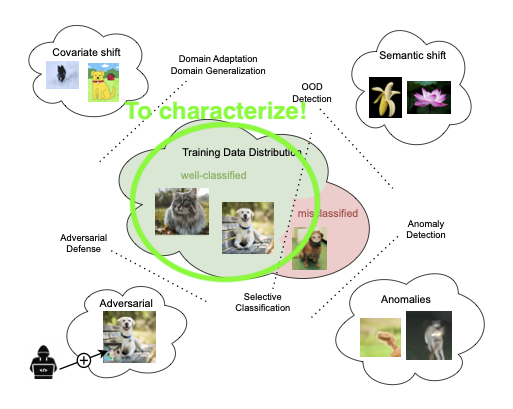

Characterization of a Reliability Domain for Image Classifiers
The goal of my thesis was to explore methods for defining a reliability domain that would clarify the conditions under which a model is trustworthy. Three aspects have been considered:
